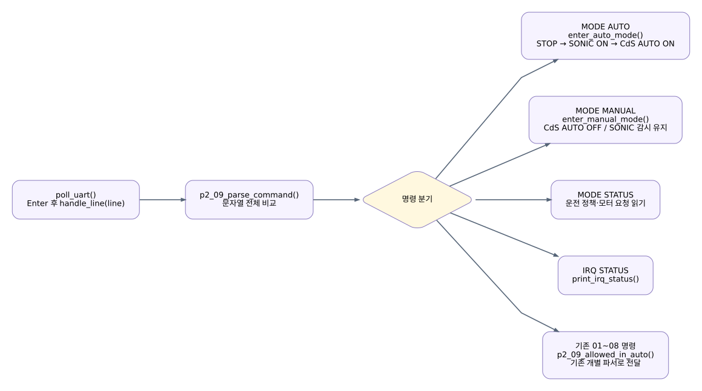

01. 시스템 목표·완성 동작
목표: 제2부 08장까지의 MicroBlaze V 사용자 AXI IP·UART 통신·버튼 인터럽트·ADC/PWM·모터 안전 제어를 유지하고, MODE AUTO/MODE MANUAL 문자열 명령과 LED14/15 진단 기능을 통합한다.

| 명령 | 기대 동작 |
|---|---|
MODE AUTO | CdS 자동 조명 ON, 초음파 연속 ON, 모터 STOP 요청, FND 거리 모드 |
MODE MANUAL | CdS 자동 조명 OFF, 초음파 안전 감시 유지, FND 이전 모드 복귀 |
MODE STATUS | 운전 모드와 CdS/SONIC 설정, 모터 요청 상태 |
IRQ STATUS | 타이머·8개 버튼 이벤트 카운터, COALESCED |
STATUS | 01~08장 기존 필드 + CTRL_MODE/IRQ_TIMER/LED14/LED15 |
MOTOR FWD | MANUAL에서 기존 안전 조건 검사; AUTO에서는 거부 |
AUTO OFF, SONIC OFF | AUTO에서는 거부; MANUAL에서는 기존 명령으로 처리 |
02. 자동/수동 제어권 분리
| 항목 | MODE AUTO | MODE MANUAL |
|---|---|---|
| CdS 게이트 | ON: 어두울 때 PWM 출력 | OFF: PWM 수동 출력; 수동 AUTO ON 명령은 기존대로 사용 가능 |
| 초음파 연속 측정 | ON | 끄지 않고 유지. 필요 시 SONIC OFF를 별도 명령으로 수행 |
| 모터 | STOP 요청만 발행, 자동 재기동 없음 | MOTOR FWD/REV는 기존 RTL 안전 상태를 확인한 경우에만 허용 |
| FND | DIST cm 표시; 새 샘플 전 소등 | VALUE/EVENTS 복귀 |
| LED14 | UART 완료 행 수신 때 상태 반전 | 동일 |
| LED15 | Timer IRQ 0.5초마다 상태 반전(실제 클록 확인) | 동일 |
motor_controller가 담당합니다. Motor ENA 실제 OFF는 MOTOR STATUS로 확인해야 합니다.03. 실제 함수명 기준 C 플로우차트

poll_uart() → handle_line() → p2_09_parse_command(). 명령이 일치하면 enter_auto_mode(), enter_manual_mode() 또는 print_irq_status() 실행. 그 외 명령은 기존 파서에 전달한다.
04. 08장 프로젝트 소스·기능 확인
09장 새 설계의 출발점을 확보한다.
Vivado → File → Open Project
08장 실습 후 생성된 $HOME/soc/hw/soc_ip_design_08/soc_ip_design_08.xpr를 연다.
BD와 01~08장 IP, XADC, Timer, UART, 기존 LED14/15용 AXI GPIO가 있는지 확인.
동작 원리: 이전 장의 재현된 하드웨어 기준선을 복제한다.
오류 점검: 08장 프로젝트가 아직 없으면 이 절차는 진행하지 않고 해당 장부터 실습.
05. 09장 독립 XPR 생성
원본 08장 성공 결과를 유지한다.
File → Project → Save As
이름 soc_ip_design_09, 폴더 $HOME/soc/hw/에서 새 XPR을 생성한다.
soc_ip_design_09.xpr와 BD/Top을 신규 프로젝트에서 확인.
동작 원리: 프로젝트별 차등 기능 실습으로 이전 성공 결과를 보존한다.
오류 점검: 원본 폴더 절대경로 참조가 남아 있으면 수정 전에 확인.
06. 기존 Block Design 구조 대조
09장은 새 사용자 AXI IP를 만들지 않는다.
Flow Navigator → IP INTEGRATOR → Open Block Design
soc11_integration.bd에서 MicroBlaze V, AXI GPIO, AXI UART Lite, AXI Timer, AXI INTC, P2-03 Buttons IP를 확인한다.
기존 블록들이 누락되지 않고 연결된 상태.
동작 원리: UART는 Polling, 버튼/Timer만 인터럽트로 관리한다.
오류 점검: AXI Timer가 없으면 08장 구성부터 확인; 임의 중복 추가 금지.
07. 버튼과 Timer IRQ의 AXI INTC 연결
두 인터럽트가 각각 CPU로 전달되어야 한다.
BD → AXI Interrupt Controller · xlconcat 계층
버튼 IP IRQ와 AXI Timer interrupt가 AXI INTC의 서로 다른 입력에 연결되었는지 확인한다. 없으면 두 개를 받아들이는 xlconcat 구조로 확장한다.
버튼과 타이머가 INTC 입력에서 서로 다른 슬롯으로 연결됨.
동작 원리: 둘을 한 IRQ ID에 중복 등록하면 한 콜백이 호출되지 않을 수 있다.
오류 점검: xlconcat width·입력 bit 순서, INT CEA/interrupt 출력과 CPU INTERRUPT 경로 확인.
08. Clock·Reset 기준 확인
Timer의 0.5초를 실제 클록으로 환산한다.
BD → AXI Timer / Clock Wizard 연결
AXI Timer의 s_axi_aclk 클록 주파수 및 aresetn 연결을 확인하여 기록한다.
실제 Timer 클록이 확인되고 기존 시스템 Reset이 유지됨.
동작 원리: C의 P2_09_TIMER_CLK_HZ는 이 주파수를 입력받는다. 100MHz는 가정값이다.
오류 점검: 서로 다른 Clock Domain이면 CDC/Reset을 별도 검증.
09. BD Validate 및 주소 맵 확인
원본 사용자 IP와 AXI Timer/GPIO의 주소 충돌을 방지한다.
BD → Validate Design / Address Editor
Validate 실행 후 GPIO·Timer·P2-01~08 IP의 Base Address 및 IRQ ID를 표로 기록한다.
주소 중복 없고 기존 IP 경로 유지; Validate가 오류 없이 완료되는지 확인.
동작 원리: C의 모든 BASEADDR은 실제 XSA/BSP와 1:1 대응해야 한다.
오류 점검: 기존 프로젝트와 달라진 주소가 있으면 XSA와 C 상수를 모두 갱신.
10. Top 사용자 배선 유지
기능 로직을 Top에 추가하지 않는다.
Sources → Design Sources → basys3_soc11_top
rtl/basys3_soc11_top_p2_08.v를 09장 복제본에서 유지한다. 변경 전후 LED0/1/2·LED14/15, CdS, SONIC, FND, Motor, XADC 연결을 비교한다.
09장 새 Top 기능 로직 없음; GPIO led[15:3] 매핑 유지.
동작 원리: 09장은 IRQ/모드 정책 중심의 C 단계이므로 Top의 기능 회로를 새로 만들지 않는다.
오류 점검: Wrapper 포트와 실제 user Top 포트를 직접 대조.
11. XDC 보존·보드 핀 확인
기존 외부 장치 배선과 MCU 핀 할당을 보존한다.
Sources → Constraints / Master XDC
기존 XDC의 버튼, JA CdS/SONIC, JB 모터, JXADC, 내장 FND와 LED0~15 핀 제약을 검토한다.
중복 핀·IOSTANDARD·클록 제약 충돌이 없음.
동작 원리: 모터 외부 전원, HC-SR04 ECHO 5→3.3V, XADC 0~1V 안전 기준은 그대로 유지한다.
오류 점검: 전압 미확인·핀 충돌 시 실제 장치 연결 금지.
12. HDL Wrapper 갱신 및 프로젝트 Top 확인
Vivado 자동 생성 산출물의 실제 포트가 기준이다.
BD → Generate Output Products → Create HDL Wrapper
필요한 경우 재생성하고 Vivado 관리 Wrapper를 사용한다. Sources에서 basys3_soc11_top을 Set as Top으로 지정한다.
Top→Wrapper→BD 계층과 포트 이름 일치.
동작 원리: 자동 생성 Wrapper를 수작업으로 수정하지 않는다.
오류 점검: Generate 실패 또는 Unknown port는 BD 외부 포트를 먼저 확인.
13. Vivado 합성·타이밍 확인
09장 인터럽트 연결을 하드웨어 수준에서 검증한다.
Run Synthesis → Run Implementation → Timing Summary
DRC·Clock·Reset·WNS/TNS·Critical Warning을 기록하고 Output Generate Bitstream을 실행한다.
합성·구현·Bitstream과 타이밍 기준을 확인.
오류 점검: 기존 클록 덮어쓰기 Critical Warning이 재발하면 원인을 해소.
14. XSA 내보내기
Vitis가 새 IRQ 구성과 AXI 주소를 인식하도록 한다.
File → Export → Export Hardware
Bitstream 포함 여부를 확인하고 새 09장 XSA를 내보낸다.
09장 프로젝트에 대응하는 XSA가 생성됨.
동작 원리: 기존 08장 XSA를 그대로 쓰면 새 IRQ 배치가 반영되지 않을 수 있다.
오류 점검: Vitis Platform이 XSA를 갱신하지 않았는지 확인.
15. Vitis Platform 갱신
09장 BSP를 실제 하드웨어에 일치시킨다.
Vitis Unified IDE 2024.2 → Platform Component
09장 XSA 기반 Platform을 지정하고 Build한다. 사용한 Domain이 standalone_microblaze_riscv_0 계열인지 확인한다.
BSP xparameters.h에서 GPIO/Timer/Button IRQ/주소 매크로 확인.
동작 원리: SDT와 Classic 분기는 BSP 실제 정의에 맞추어 빌드된다.
오류 점검: Platform과 Application의 XSA/ELF 불일치 확인.
16. 09장 전체 C 소스 추가
기존 08장 메인을 복사하고 기능만 확장한다.
Vitis Explorer → Application → src
main_p2_09.c, p2_09_mode_logic.c/.h와 03~08장 p2_XX_logic.c/.h를 추가한다. main_p2_08.c는 빌드에서 제외한다.
main()이 정확히 한 개이고 모든 로직 모듈이 컴파일 대상.
동작 원리: 중복 main()/중복 심벌 없이 링킹한다.
오류 점검: 참고용 reference 메인은 Vitis 빌드에서 제외.
17. AXI 주소와 IRQ ID 입력
임의 주소로 FPGA를 접근하지 않는다.
Vitis → BSP xparameters.h / C 빌드 설정
P2_01~08 BASEADDR, P2_03_BTN_INTR_ID/PARENT, P2_09_TIMER_CLK_HZ와 SDT GPIO/Timer Base 또는 Classic Device ID·IRQ ID를 실제 값으로 정의한다.
#error 사전 차단이 해제되고 각 주소가 유일함.
동작 원리: 예제 모의 주소(0x43C...)는 실물 주소가 아니며 복사 사용 금지.
오류 점검: 값이 없는 경우 C가 의도적으로 컴파일을 중단한다.
18. C 코드 컴파일·링크
모든 09장 함수 참조와 BSP API 정합성을 검증한다.
Vitis → Application → Build
실제 09장 XSA 기반 BSP에서 main과 보조 C 모듈을 컴파일하고 ELF를 생성한다.
컴파일 오류·링크 오류 없는 ELF 생성(실습 때 확인).
동작 원리: 호스트 모의 구문 검사는 실제 BSP 빌드의 대체물이 아니다.
오류 점검: xinterrupt_wrap.h, xgpio.h, xtmrctr.h 및 API 선언 확인.
19. 터미널과 Basys3 다운로드
실제 UART 문자열 명령을 전달한다.
Vitis → Debug / Program Device · moserial/minicom
Bitstream+ELF 다운로드 후 PC UART 115200, 8N1, Enter 전송으로 터미널을 준비한다.
P2-09: UART/IRQ + MODE... 시작 메시지 수신.
동작 원리: UART 1회 명령 수신과 Timer IRQ는 별개 동작이다.
오류 점검: 포트 점유/권한, Baud/CRLF, ELF/Bitstream 세트 확인.
20. MODE MANUAL 기본 상태
실수로 자동 조명/모터를 가동하지 않도록 한다.
UART 터미널
MODE STATUS 및 STATUS 입력 후 초기 모드를 확인한다.
MODE=MANUAL 및 CTRL_MODE=MANUAL 예상.
동작 원리: Reset 기본 상태는 수동, PWM OFF, SONIC Auto OFF, 모터 STOP 요청이다.
오류 점검: 모터 상태는 MOTOR STATUS로 실제 EN을 별도로 확인.
21. MODE AUTO 전환·센서 확인
조도 게이트와 초음파 감시를 동시에 활성화한다.
UART 터미널
MODE AUTO → MODE STATUS → CDS READ → SONIC READ 순서로 입력한다.
CDS_AUTO=1, SONIC_AUTO=1, FND DIST; 모터 STOP 요청 메시지.
동작 원리: CdS 입력은 디지털 명암만 구분하며 PWM Duty 값은 유지한다.
오류 점검: 새 SONIC 완료 전 FND는 소등; FND 0000이 오류 거리처럼 표시되면 실패.
22. AUTO 중 위험 명령 차단
모드 정책이 기존 RTL 안전을 우회하지 않도록 한다.
UART 터미널
MOTOR FWD, MOTOR REV, AUTO OFF, SONIC OFF를 AUTO 상태에서 차례로 전송한다.
각 명령에 BLOCKED: MODE AUTO safety 메시지.
동작 원리: CPU 제어 정책에서 모터 기동 및 핵심 센서 해제를 막는다.
오류 점검: 모터 안전 하드웨어는 별도로 독립 검증 필요.
23. IRQ STATUS 버튼 시험
기존 03장 버튼 단·장 누름 이벤트가 유지되는지 확인한다.
Basys3 BTNU/BTND/BTNL/BTNR + UART
버튼을 짧게/5초 이상 누르고 IRQ STATUS로 8개 이벤트 카운트를 확인한다.
각 버튼/눌림 종류에 대응하는 카운터가 증가하고 COALESCED을 조회.
동작 원리: IRQ 처리 시간보다 반복이 빠르면 이벤트 비트맵은 동일 사건을 합칠 수 있다.
오류 점검: BTN ID/IRQ 연결·W1C Pending·Interrupt Enable 확인.
24. Timer IRQ와 LED15 시험
타이머 IRQ의 주기적 동작을 확인한다.
Basys3 LED15 · UART IRQ STATUS
IRQ STATUS를 약 2초 간격으로 여러 번 입력하고 LED15를 관찰한다.
실제 Timer 클록이 100MHz이면 약 0.5초마다 LED15 상태 반전 및 IRQ TIMER 증가.
동작 원리: ISR은 카운트만 갱신하고 LED 출력은 메인 루프에서 처리한다.
오류 점검: LED15 미동작이면 Timer_CLK_HZ·INTC 소스 연결·IRQ ID·Reset·Timer 옵션 확인.
25. UART LED14 활동 시험
명령 수신과 타이머 표시가 다른 비트임을 확인한다.
Basys3 LED14 · UART
MODE STATUS를 Enter로 반복 입력하고 LED14의 상태 반전을 확인한다.
완료된 비어있지 않은 한 줄마다 LED14 상태 토글; LED15는 타이머 단독 표시.
동작 원리: UART LED14는 이전 단일 문자 1/0 제어 대신 이번 장에서 완료 명령의 활동 토글 표시로 정의한다.
오류 점검: CRLF 두 번째 종결자에서는 LED14 토글되지 않음.
26. MANUAL 복귀·기존 명령 회귀
자동 모드 기능을 종료하고 이전 장을 보존한다.
UART 터미널
MODE MANUAL → PWM 50 → DISP 0050 → ADC READ → STATUS 순서로 입력한다.
CDS AUTO OFF, SONIC 안전 감시 유지, FND VALUE 0050, 이전 명령 정상 파싱.
동작 원리: MANUAL 복귀는 모터 재기동을 뜻하지 않는다.
오류 점검: AUTO OFF/SONIC OFF/ADC PWM의 결과를 기존 08장 계약과 비교.
27. 기능·안전 통합 회귀
01~08장의 통합 기능을 확인한다.
UART/보드/오실로스코프
LED0, PWM LED1, SONIC LED2, FND, 버튼, 모터 안전 정지, XADC, LED14, LED15를 각자 확인한다.
동작 원리: 모든 출력과 안전 조건을 함께 확인한다.
오류 점검: 모터 전원 분리, HC-SR04 Echo 5V 변환, XADC 0~1V 안전 점검.
29. C·RTL 전체 소스 및 테스트 링크
reuse/ 폴더에는 02~07장 RTL을 보존합니다. 실제 AMD 생성 IP/BD Wrapper의 비트스트림을 이 패키지에서 만든 것처럼 제공하지 않습니다.